Rundgang durch Arasul Jet
Feature-Audit 023 · alle Werte live gemessen am 19.08.2026 gegen
https://arasul.tail746d9b.ts.net, Benutzer pruefer, 1440 Pixel breit, Standarddesign black.
So benutzt du diese Seite
- Von oben nach unten durchgehen. Jeder Bildschirm hat ein Bild, einen kurzen Text, seine Befunde und ein Eingabefeld.
- Bei jedem Feld erst passt, stört oder blockiert wählen, dann schreiben, was anders werden soll. Die Bewertung allein reicht schon, Text ist optional.
- Wenn dich eine einzelne Komponente stört, den Abschnitt Komponenten aufklappen und dort kommentieren.
- Unten auf Alles kopieren und den Text in den Claude-Chat einfügen. Was dort ankommt, ist verbindliche Eingabe.
Deine Eingaben bleiben im Browser gespeichert, du kannst zwischendurch schließen.
Das Lagebild in drei Sätzen
Bevor es um einzelne Knöpfe geht: drei Dinge, die größer sind als jeder UI-Fehler.
1. Die Roadmap stimmt nicht mit dem Code überein
Plan 021 (Engine-Vereinheitlichung, agentic RAG) ist zu 81 Prozent umgesetzt — 6 von 8 Schritten,
belegt durch die PRs #346 bis #364. Plan 020 (Multi-Plattform) zu rund 30 Prozent, 1 von 7 Schritten voll.
Die Roadmap führt beide als planned ohne PR. Auch T25 steht auf planned, obwohl die Planseite
status: done und verified_on_device: true trägt.
Das heißt: Der Satz „744 Commits und 0 von 7 Gates“ misst nicht, was gebaut wurde, sondern was nachgetragen wurde. Wenn die Roadmap die Quelle für Priorisierung ist, priorisierst du gerade auf falschen Zahlen.
2. Die Website verspricht fünf Dinge, die das Gerät nicht hat
Aus 40 prüfbaren Zusagen auf arasul.de sind fünf im Code nachweislich nicht vorhanden: Nutzer anlegen, eigene Anwendungen hosten („Deploy kundenportal“), Transkription, Cloud-Modell dazuschalten, Rechnungen aus dem Postfach nach Lexware oder DATEV. Bei jedem einzelnen ist die Trefferzahl im Repo null.
Verschärfend: docs/legal/AVV_TEMPLATE.md:175 sagt dem Auftraggeber „Trennungskontrolle
(Multi-User-Isolation, RBAC)“ nach Art. 28 DSGVO zu. Das ist eine vertragliche Zusage, kein Marketingtext.
3. Die Vorführung ist seit gestern um Faktor 18 langsamer geworden
Am 18.08. gemessen: 2,0 Sekunden bis zum ersten Zeichen, 28,5 Token pro Sekunde. Heute: 37 Sekunden Denkzeit vor dem ersten Wort, 8,9 Token pro Sekunde. Ursache ist ein Modellwechsel im Auto-Modus auf ein Reasoning-Modell, den niemand ausgelöst hat.
Das ist der teuerste einzelne Befund dieses Laufs, weil er genau den Moment trifft, in dem ein Partner zum ersten Mal etwas eintippt.
Alle Befunde auf einen Blick
Sortiert nach Schwere, nicht nach Bildschirm. Die letzten Zeilen sind gute Nachrichten: live geprüfte Dinge, die funktionieren.
| Nr | Befund | Schwere | Gate | Stand |
|---|---|---|---|---|
| F-14 | Das eingebettete n8n ist englisch und hell, mitten in der deutschen schwarzen Oberfläche Automationen-Tab: „Overview“, „All the workflows, credentials and data tables you have access to“, „Create workflow“, „Failure rate“, „Time saved“, „Sort by last updated“, „50/page“. Dazu n8ns eigenes Orange. | groß | G3 | neu |
| F-21 | Es gibt keine Benutzerverwaltung, die Website verspricht sie Einstellungen → Sicherheit kann nur Passwörter für Dashboard und MinIO ändern. Kein Anlegeweg, keine Rollenwahl. Backend: routes/auth.js hat keine Nutzer-Route, setupService.js:39 legt nur den ersten Admin an. Website /eigener-ki-server: „legst Nutzer an“, „KI-Chat für dein Team“, „3 bis 10 gleichzeitig aktive Nutzer“. | groß | G4 | neu |
| F-29 | 8,9 Token pro Sekunde statt 28,5 Anzeige unter der Antwort: „8.9 tok/s“. Der Prüflauf vom 18.08. mass 28,5 bis 29. Ursache: das Modell wechselte ohne Zutun von Qwen 3 Coder 30B auf das Reasoning-Modell Qwen3.8 27B. | groß | G1 | neu |
| F-31 | Die KI beantwortet eine Produktfrage mit erfundenen Firmenaussagen Antwort auf „was Arasul kann“: „Arasul berät Unternehmen bei der Auswahl und Umsetzung passender KI-Lösungen“, „Arasul bietet laufende Betreuung und technischen Support“. Beides steht so nirgends und beschreibt die Firma, nicht das Produkt. Vermutliche Ursache: das Firmenprofil aus Einstellungen → KI wird als Kontext mitgegeben. | groß | G1 | neu |
| F-36 | Es gibt keinen Werksreset in der Oberflächegrep -rni "werksreset|factory.reset|factory_reset" src → keine Treffer. Für ein Gerät, das ausgeliefert und zurückgenommen wird, fehlt der Weg, es sauber zu übergeben. | groß | G1 | im Code belegt |
| F-42 | Dokumente werden nicht nach Besitzer gefiltert, jeder Zugang sieht allesroutes/documents.js:171-174 und :236 bauen die Abfrage ohne owner_id und ohne req.user. Chats sind gefiltert (routes/chats.js:49), Projekte nicht (projectService.js:56), und das aktive Projekt ist geräteweit eine Zeile (projectService.js:35) — wechselt einer das Projekt, wechselt es für alle. | groß | G4 | im Code belegt |
| F-43 | Die AVV-Vorlage sagt eine Isolation zu, die es nicht gibtdocs/legal/AVV_TEMPLATE.md:175 sagt dem Auftraggeber „Trennungskontrolle (Multi-User-Isolation, RBAC)“ nach Art. 28 DSGVO zu. Siehe F-21 und F-42. Das ist kein Verkaufsproblem mehr, sondern ein Haftungsproblem. | groß | G5 | im Code belegt |
| F-44 | „Deploy kundenportal, läuft auf deinem Server“ existiert nichtroutes/workspaceApps.js hat zwei Routen, beide setzen nur ein Sichtbarkeits-Flag. Der Katalog APP_MANIFEST hat einen Eintrag: n8n. 116_extensions.sql kennt keine Spalte für URL, Port oder Route. grep -n deploy ./arasul → 0 Treffer, grep -rin kundenportal über das ganze Repo → 0 Treffer. | groß | G1 | im Code belegt |
| F-45 | Transkription wird auf drei Branchenseiten versprochen und existiert nichtgrep -rniE "whisper|vosk|transcri|speech.to.text" → 4 Treffer, alle in 033_telegram_voice_support.sql, und die beschreibt einen OpenAI-Cloud-Key. Auf dem Gerät: 0 passende Container, 0 passende Ollama-Modelle von 11. | groß | G1 | im Code belegt |
| F-46 | Sechs gerätefremde Container laufen im Produktnetz, einer heißt litellm und hält Cloud-Keysdocker inspect → jarvis-bot, jarvis-workbench, jarvis-executor, jarvis-searxng, jarvis-postgres und litellm gehören zum Compose-Projekt jarvis (/home/arasul/jarvis/compose.yaml), avatar-ffmpeg zu avatar-pipeline. Zusammen 1,64 GB RAM. Seit 07.07.2026 als P3-1 offen. Die Website verspricht „läuft vollständig lokal“. | groß | G5 | neu |
| F-01 | Die Anmeldeseite nennt den Standard-Benutzernamen im Klartext „Standard-Benutzername: admin“. Bei einem Produkt, dessen Verkaufsargument Datensicherheit ist, verschenkt das die Hälfte jedes Zugangs an jeden, der die Seite sieht. | mittel | G5 | neu |
| F-03 | Der Tab heißt „Extensions“, egal ob Modelle oder Erweiterungen darin stehen Klick auf „Modelle“ oder „Erweiterungen“ öffnet denselben Tab mit demselben englischen Titel. | mittel | G3 | neu |
| F-04 | Rechenfehler in der RAM-Zeile des Modellbereichs „0.0 / 32.0 GB belegt · frei 30.0 GB“. 32,0 minus 0,0 ist nicht 30,0. | mittel | G2 | neu |
| F-06 | Zustandswiderspruch zwischen Modellbereich und Statusleiste Kopfbereich: „Im RAM: kein Modell geladen“. Statusleiste gleichzeitig: „Qwen 3 Coder 30B · bereit“. Bereits im Prüflauf vom 18.08. als Befund 12 notiert. | mittel | G2 | seit 18.08. offen |
| F-07 | Der Dateibaum bricht ab, ohne Weg zum vollständigen Baum „Liste gekürzt — nicht alle Einträge werden angezeigt“. Prüflauf 18.08., Befund 11, weiter offen. | mittel | G1 | seit 18.08. offen |
| F-09 | Drei von vier Erweiterungen im Auslieferungszustand heißen „Beispiel-…“ „Beispiel-Tool“, „Beispiel-Flow“, „Beispiel-App“ neben n8n. Der Kunde sieht einen Katalog, der zu drei Vierteln Platzhalter ist. | mittel | G1 | neu |
| F-12 | Ein Testartefakt steht im Flow-Katalog des Kunden „/qa-zusammenfassung — QA-Test: fasst eine Datei zusammen“. | mittel | G1 | neu |
| F-13 | Das Modell wechselt ohne Nutzeraktion und ohne Hinweis Statusleiste sprang während des Rundgangs von „Qwen 3 Coder 30B · bereit“ auf „Qwen3.8 27B · bereit“. | mittel | G2 | neu |
| F-15 | CSP-Verstoß beim n8n-Einbetten, live in der BrowserkonsoleLoading the script 'data:text/javascript,…' violates … script-src 'self' 'unsafe-inline' auf /n8n/:241. Roadmap-Thema T16, weiter offen. | mittel | G1 | seit 18.08. offen |
| F-16 | Zwei fremde Workflows stehen im Auslieferungszustand von n8n „Angebotskalkulation automatisch“ und „My workflow“, beide vom Juli. | mittel | G1 | neu |
| F-19 | „Platform Version 1.0.0“ bei 0 von 7 geschlossenen Gates Einstellungen → Allgemein. Prüflauf 18.08., Befund 4, weiter offen. Entscheidung, keine Arbeit. | mittel | G1 | seit 18.08. offen |
| F-20 | Siezen und Duzen stehen nebeneinander, teils im selben Bereich Siezen: „Wählen Sie zwischen schwarzem, dunklem und hellem Design“, „Ändern Sie die Passwörter“, „Beschreibung Ihres Unternehmens“. Duzen: „Frag dein Unternehmenswissen“, „Greife sicher von überall auf dein Gerät zu“, „Öffne n8n“. Der Sicherheitsbereich hat beides auf einem Bildschirm. | mittel | G3 | neu |
| F-23 | Englische Beschriftungen im deutschen Systembereich „RAM USAGE“, „SWAP“, „STORAGE“, „NORMAL“, „Performance“, „Self-Healing“, „Services“, „Updates“. | mittel | G3 | neu |
| F-24 | Zwei verschiedene RAM-Gesamtwerte auf zwei Bildschirmen System-Status: „25.5 / 61 GB“. Modelle und Statusleiste: „15.5 / 32.0 GB“. Ohne Erklärung, welcher Wert was ist. | mittel | G2 | neu |
| F-27 | „Konto endgültig löschen“ ohne erkennbaren Schutz des letzten Zugangs Einstellungen → Datenschutz. Der Dialog verlangt laut Code die Eingabe LOESCHEN-BESTAETIGT, aber ob das Backend das Löschen des letzten Administrators verhindert, ist ungeprüft. Nicht ausgelöst, weil zerstörend. | mittel | G1 | im Code belegt |
| F-30 | Der Denkprozess wird auf Englisch angezeigt „Denkt nach · This is a simple question about the …“ bei deutscher Frage und deutscher Oberfläche. | mittel | G3 | neu |
| F-37 | Zwei zerstörende Aktionen ohne Rückfrage „Trennen“ im Fernzugriff ( RemoteAccessSettings.tsx:270) kappt sofort die Verbindung, über die der Nutzer gerade angemeldet ist. Der An/Aus-Schalter einer Erweiterung wirkt sofort und schließt offene Tabs. | mittel | G2 | im Code belegt |
| F-38 | Eine zweite, ungepflegte Oberfläche für dieselben Inhalte/settings, /store, /terminal und jede Tippfehler-URL landen in der Legacy-Shell mit genau einem Menüeintrag. Dort fehlt die Navigation zu fünf der sechs Einstellungsbereiche. Prüflauf 18.08., Befund 14. | mittel | G3 | seit 18.08. offen |
| F-47 | Die ausgelieferte Schnittstellendoku deckt 7 von 361 Endpunkten abopenapi.yaml dokumentiert 7 Pfade, im Backend sind 361 Route-Handler registriert. /v1/external/* und /v1/chat/completions fehlen — genau die, für die ein Kunde einen Schlüssel erzeugt. docs/api/API_REFERENCE.md liegt nur im Repo, nicht beim Kunden. | mittel | G1 | im Code belegt |
| F-48 | „Bei Bedarf schaltest du ein externes Cloud-Modell dazu“ hat keinen Schalter 0 Treffer für litellm, OPENAI_API_KEY, OPENAI_BASE_URL in Frontend und Backend. Der Pfad existierte (110_flow_agents.sql:129) und wurde am 21.07.2026 ersatzlos entfernt (111_drop_flow_agents.sql:39). | mittel | G1 | im Code belegt |
| F-49 | Indexierung: 1 Minute 53 Sekunden für eine 739-Byte-Datei Upload 09:28:53, „indexiert“ 09:30:46. Der Indexer fährt drei nacheinander geschaltete KI-Analysen (Zusammenfassung 34 s, Kategorisierung 20 s, Themen 20 s) und findet die Datei erst im nächsten 30-Sekunden-Scan. | mittel | G1 | neu |
| F-50 | Vektorsuche ist aus, RAG läuft auf der Textebene Indexer-Protokoll: „Textlayer-only indexed 2 chunks … (Embedding aus — kein Qdrant)“. Folge von Plan 021 S8. Die Antwort war trotzdem korrekt, aber das Verhalten bei großen Beständen ist damit unbelegt. | mittel | G1 | neu |
| F-51 | Das Terminal bricht im Standardlayout Pfade mitten im Wort um Der Prompt erscheint als „sandbox@sandbox-projekte-development:/wo“ / „rkspace/projekt$“. Das rechte Panel ist im Standardlayout rund 40 Spalten breit. Der Knopf „KI-Zugang“ ist am rechten Rand abgeschnitten. | mittel | G3 | neu |
| F-56 | Der automatische Deploy setzt den Build-Hash auf dev-build zurückAm 19.08.2026 nach dem Deploy von PR #395 live gesehen: Einstellungen → Allgemein zeigt wieder Build: dev-build, obwohl PR #394 dort 94a7ecbe gesetzt hatte. Ursache: .env auf dem Gerät enthält wörtlich BUILD_HASH=dev-build (Zeile 7), compose/compose.app.yaml:72 liest sie von dort. Der Fix aus #394 hielt nur, weil beim Handbau die Variable überschrieben wurde. F-18 fällt damit bei jedem automatischen Deploy zurück. | mittel | G1 | neu |
| F-02 | 401 auf /api/auth/me vor dem Login schreibt einen Fehler in die BrowserkonsoleKein Nutzerschaden, aber die Konsole ist bei jeder Vorführung nicht sauber. | klein | G3 | neu |
| F-05 | Widerspruch auf einer Modellkachel: 261 MB in der Zeile, ~274 MB im Text „Nomic Embed Text“. Einheitenfehler MiB gegen MB. Prüflauf 18.08., Befund 7. | klein | G3 | seit 18.08. offen |
| F-10 | Das Suchfeld der Erweiterungen schneidet seinen eigenen Platzhalter ab „Erweiterungen durchsuch“. | klein | G3 | neu |
| F-11 | Uneinheitliche Schalterbeschriftung im Erweiterungsraster n8n: „Im Workspace sichtbar“. Die anderen drei: „Selbst gebaut“ — eine Eigenschaft, keine Schalterbeschriftung. | klein | G2 | neu |
| F-17 | n8n bringt eine Akzentfarbe mit, die im übrigen Produkt nicht vorkommt Orange. Ebenso im System-Status-Diagramm Orange und Violett, während das Produkt sonst Blau verwendet. | klein | G3 | neu |
| F-22 | Die Oberfläche verweist den Kunden auf einen Repo-Pfad, den er nicht hat „Der Operator kann es per CLI zurücksetzen: scripts/security/reset-password.sh“. | klein | G3 | neu |
| F-26 | Der Fernzugriff-Assistent zeigt Schritt 5 als offen, obwohl alles verbunden ist Vier Haken, „Fertig“ als Nummer 5 ungefüllt, während die Verbindung nachweislich steht. | klein | G2 | neu |
| F-33 | Der Chat-Titel bleibt während der Antwort auf „Arasul denkt nach …“ Ein Zwischenzustand als Titel, erst nach der Antwort durch die Frage ersetzt. | klein | G2 | neu |
| F-34 | Toter Code: ProjektAnschlussSelect.tsx wird von nichts gerendertgrep -rn "ProjektAnschlussSelect" src findet nur die Definition. | klein | G1 | im Code belegt |
| F-35 | Der Facettenfilter der Erweiterungen ist gebaut, aber nicht angeschlossenderiveExtensionFacets (storeExtensionFilters.ts:122) hat außer Tests keinen Aufrufer, applyExtensionFilters (StoreExtensionsGrid.tsx:189) ist wirkungslos. Der Kommentar verspricht Filter „Bereich · Status“. | klein | G1 | im Code belegt |
| F-39 | Sidebar-Ansicht 'search' existiert als Wert, hat aber keinen KnopfworkspaceStore.ts:225 kennt sie, ActivityBar.tsx bietet sie nicht an. | klein | G1 | im Code belegt |
| F-40 | Zwei Auto-Einklapp-Mechanismen laufen gegen leere MengenAPP_TAB_TYPES (SidebarHost.tsx:33) und APP_CHILD_TAB_TYPES (useWorkspaceApps.ts:35) sind leer. | klein | G1 | im Code belegt |
| F-41 | „Ungespeicherte Änderungen“ wird nur von einem Bereich gemeldet Nur KISettings speist die Anzeige. PasswordManagement hält Formularinhalt und meldet ihn nicht. | klein | G2 | im Code belegt |
| F-28 | 37 Sekunden Denkzeit vor dem ersten Wort der Chat-Antwort Chat, Frage „Nenne mir in drei Stichpunkten, was Arasul kann.“ Anzeige „Nachgedacht · 37s“, Gesamtdauer bis zur fertigen Antwort rund 90 Sekunden. Der Prüflauf vom 18.08. mass 2,0 s bis zum ersten Zeichen. Behoben am 19.08.2026, PR #395. Ursache: chatAgentRunner.js fragte die Einstufung aus queryComplexityAnalyzer.js nie ab, die war nur in llmJobProcessor.js:150 verdrahtet. Nachher live gemessen: Geräteprotokoll meldet Denken aus: simple (direct_command), 0 Denk-Zeichen, Gesamtdauer 33 statt 90 Sekunden. | gut | G2 | eingelöst |
| F-18 | Behoben und live bestätigt: Gerätename, JetPack-Version, Build-Hash Einstellungen → Allgemein zeigt Hostname arasul und JetPack L4T 36.4.7, beides stabil. Prüflauf 18.08., Befunde 1 bis 3. PR #394. Der Build-Hash hält nicht, siehe F-56. | gut | G1 | eingelöst |
| F-52 | Behoben und live bestätigt: /dashboard und Deep-Links in die Einstellungen/dashboard liefert jetzt die gestaltete Oberfläche statt eines rohen 404. /settings?tab=remote-access öffnet den Fernzugriff. Prüflauf 18.08., Befunde 9 und 15. | gut | G1 | eingelöst |
| F-53 | Eingelöst und live bestätigt: RAG mit Quellenangabe Testdokument mit erfundener Kennnummer hochgeladen, danach gefragt. Antwort: „Kennnummer: WV-2026-4471“, „Jährlicher Wartungsbetrag: 7.312,50 Euro netto“, „Quelle: AUDIT-023-Testdokument.md (Abschnitt „Wartungsvertrag Muster GmbH“)“. Alles korrekt. Das ist Website-Versprechen 1 bis 3. | gut | G1 | eingelöst |
| F-54 | Eingelöst und live bestätigt: Claude Code und Codex sind im Terminal installiertwhich claude codex node python3 → /usr/local/bin/claude, /usr/local/bin/codex, /usr/local/bin/node, /usr/bin/python3. | gut | G1 | eingelöst |
| F-55 | Eingelöst und live bestätigt: n8n läuft ab Werk ohne fremde Anmeldewand Zwei Schichten, config/traefik/dynamic/routes.yml:162. curl ohne Sitzung → 401. Auto-Login über routes/automations.js:27. Roadmap-Thema T15 stimmt heute. | gut | G1 | eingelöst |
Der Rundgang
In der Reihenfolge, in der ein Partner die Oberfläche sehen würde.
B01 · Anmeldung
Weg dorthin: jede URL ohne gültige Sitzung
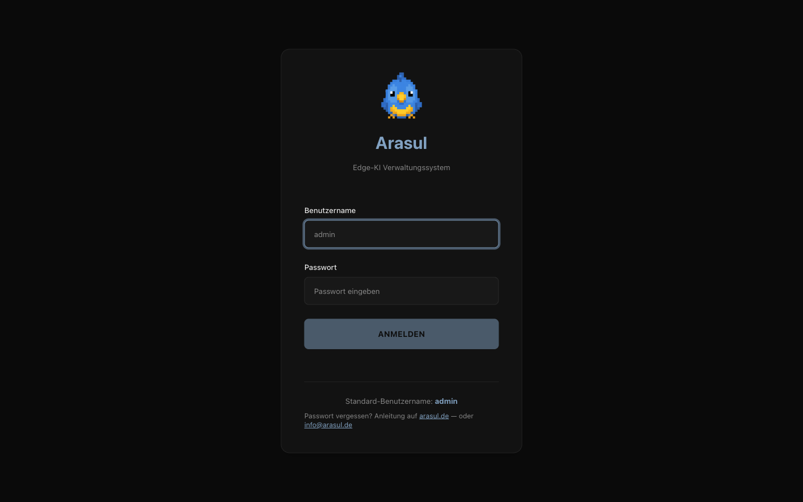
Der erste Bildschirm, den ein Partner sieht. Maskottchen, zwei Felder, ein Knopf. Anmeldung in 770 ms gemessen. Darunter steht der Standard-Benutzername im Klartext.
- F-01 mittelG5neu
Die Anmeldeseite nennt den Standard-Benutzernamen im Klartext - F-02 kleinG3neu
401 auf/api/auth/mevor dem Login schreibt einen Fehler in die Browserkonsole
Komponenten dieses Bildschirms (4) — je ein eigenes Feld
B02 · Erst-Start, drei Schritte
Weg dorthin: einmalig nach der ersten Anmeldung
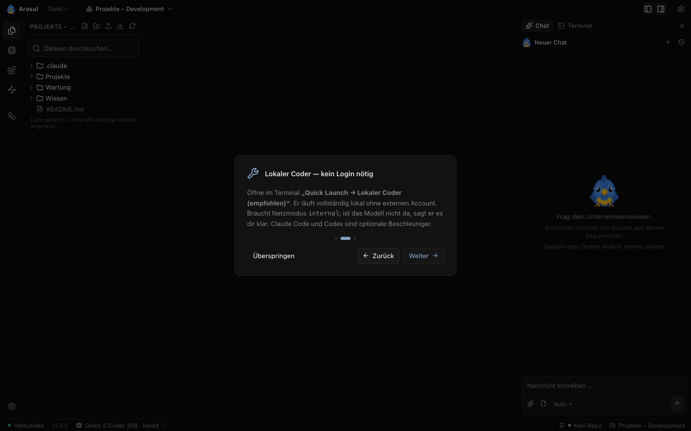
Drei Karten, die erklären, was das Gerät ist, wie der lokale Coder startet und wie man Claude einmalig anmeldet. Sprachlich der beste Text im ganzen Produkt: kurz, deutsch, ohne Fachjargon. Genau der Einstieg, den dein Zielkunde braucht.
Komponenten dieses Bildschirms (1) — je ein eigenes Feld
B03 · Arbeitsbereich, Dateien
Weg dorthin: /workspace, Standardansicht nach der Anmeldung
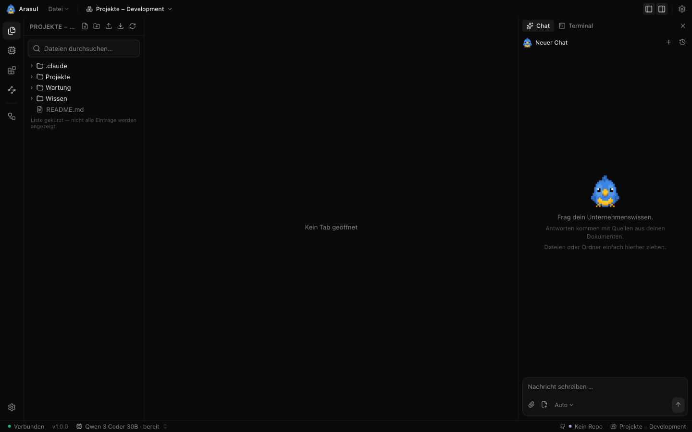
Der Rahmen, in dem alles stattfindet: Menüleiste, Aktivitätsleiste links, Dateibaum, Tab-Fläche, rechtes Panel mit Chat und Terminal, Statusleiste. Der Leerzustand sagt „Kein Tab geöffnet“.
- F-07 mittelG1seit 18.08. offen
Der Dateibaum bricht ab, ohne Weg zum vollständigen Baum
Komponenten dieses Bildschirms (6) — je ein eigenes Feld
B04 · Modelle
Weg dorthin: Aktivitätsleiste, Modelle
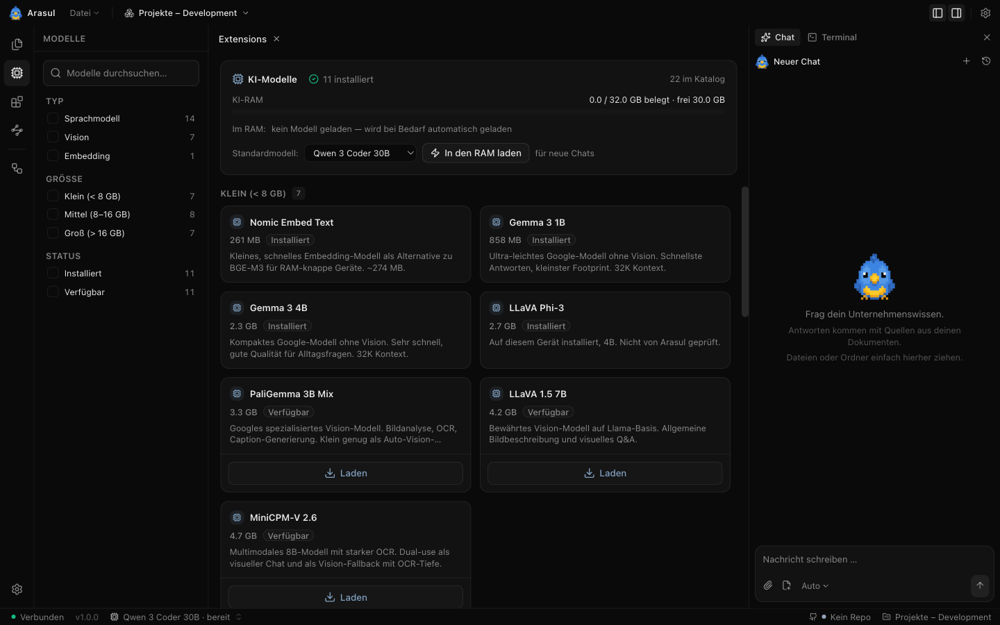
Elf installierte Modelle, 22 im Katalog, Filter nach Typ, Größe und Status. Der Kopfbereich zeigt das KI-RAM-Budget und das Standardmodell. Fachlich der dichteste Bildschirm des Produkts.
- F-03 mittelG3neu
Der Tab heißt „Extensions“, egal ob Modelle oder Erweiterungen darin stehen - F-04 mittelG2neu
Rechenfehler in der RAM-Zeile des Modellbereichs - F-05 kleinG3seit 18.08. offen
Widerspruch auf einer Modellkachel: 261 MB in der Zeile, ~274 MB im Text - F-06 mittelG2seit 18.08. offen
Zustandswiderspruch zwischen Modellbereich und Statusleiste
Komponenten dieses Bildschirms (4) — je ein eigenes Feld
B05 · Erweiterungen
Weg dorthin: Aktivitätsleiste, Erweiterungen
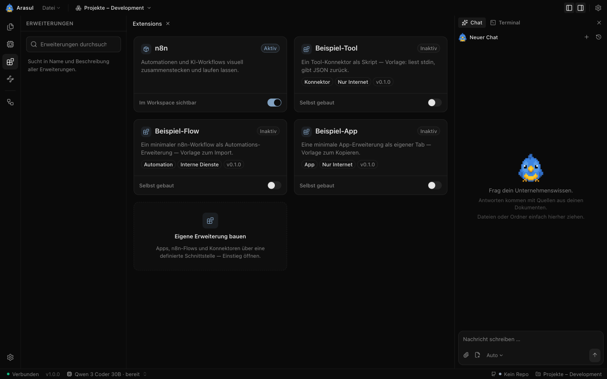
Vier Einträge: n8n als einziger echter, dazu drei Vorlagen. Am Ende die Kachel „Eigene Erweiterung bauen“.
- F-09 mittelG1neu
Drei von vier Erweiterungen im Auslieferungszustand heißen „Beispiel-…“ - F-10 kleinG3neu
Das Suchfeld der Erweiterungen schneidet seinen eigenen Platzhalter ab - F-11 kleinG2neu
Uneinheitliche Schalterbeschriftung im Erweiterungsraster - F-35 kleinG1im Code belegt
Der Facettenfilter der Erweiterungen ist gebaut, aber nicht angeschlossen
Komponenten dieses Bildschirms (3) — je ein eigenes Feld
B06 · Flows
Weg dorthin: Aktivitätsleiste, Flows
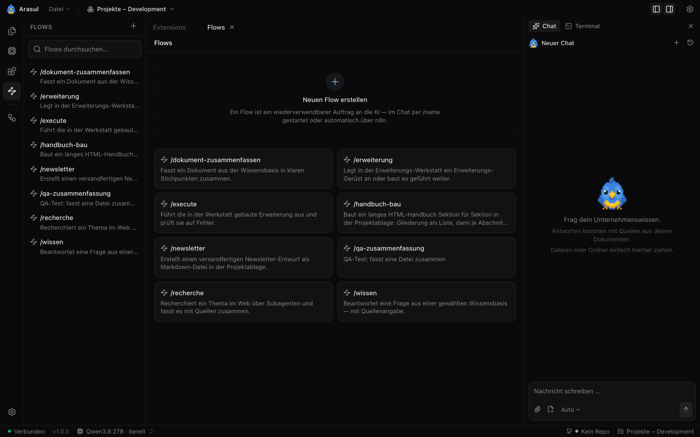
Acht mitgelieferte Flows als Schrägstrich-Befehle im Chat. Der Erklärtext trifft den Ton: „Ein Flow ist ein wiederverwendbarer Auftrag an die KI — im Chat per /name gestartet oder automatisch über n8n.“
- F-12 mittelG1neu
Ein Testartefakt steht im Flow-Katalog des Kunden - F-13 mittelG2neu
Das Modell wechselt ohne Nutzeraktion und ohne Hinweis
Komponenten dieses Bildschirms (2) — je ein eigenes Feld
B07 · Automationen, eingebettetes n8n
Weg dorthin: Aktivitätsleiste, Automation
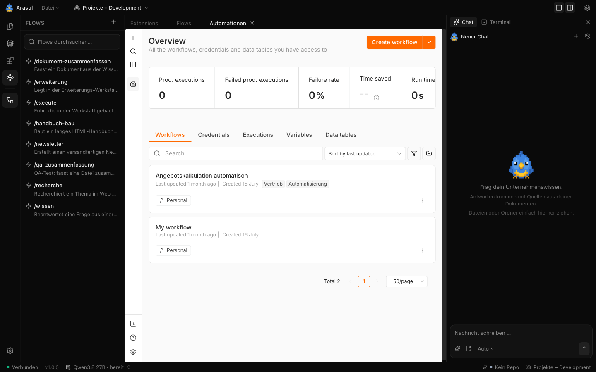
n8n läuft, ist erreichbar und meldet den Nutzer automatisch an. Das ist technisch das sauberste Stück Integration im ganzen Produkt und optisch das lauteste Problem.
- F-14 großG3neu
Das eingebettete n8n ist englisch und hell, mitten in der deutschen schwarzen Oberfläche - F-15 mittelG1seit 18.08. offen
CSP-Verstoß beim n8n-Einbetten, live in der Browserkonsole - F-16 mittelG1neu
Zwei fremde Workflows stehen im Auslieferungszustand von n8n - F-17 kleinG3neu
n8n bringt eine Akzentfarbe mit, die im übrigen Produkt nicht vorkommt
Komponenten dieses Bildschirms (2) — je ein eigenes Feld
B08 · Einstellungen, Allgemein
Weg dorthin: Zahnrad, dann Allgemein
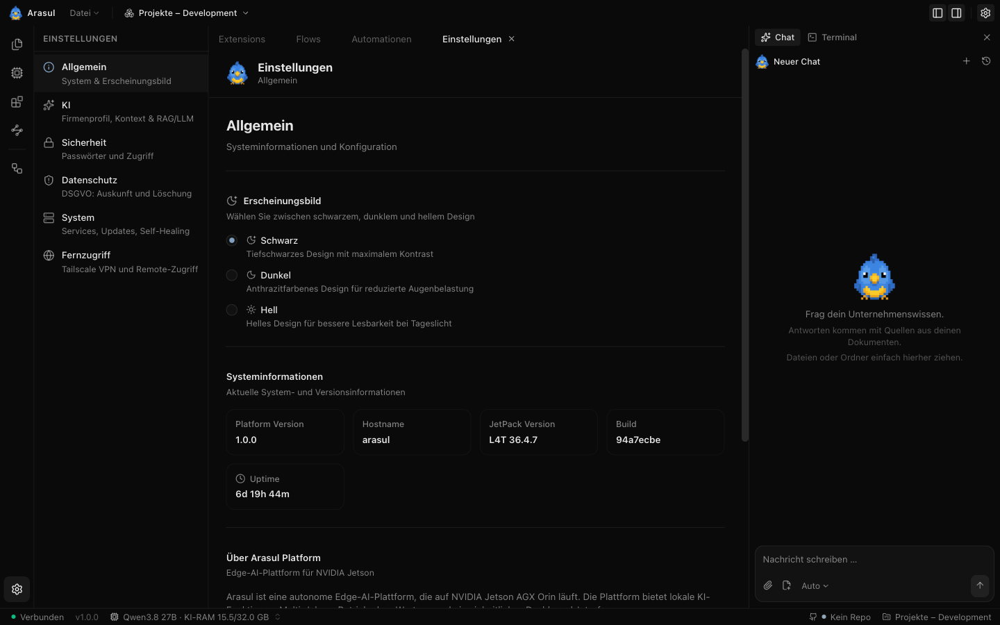
Design, Systeminformationen, Kurzbeschreibung. Drei der vier Felder, die im Prüflauf vom 18.08. falsch waren, sind hier nachweislich behoben.
- F-18 gutG1eingelöst
Behoben und live bestätigt: Gerätename, JetPack-Version, Build-Hash - F-19 mittelG1seit 18.08. offen
„Platform Version 1.0.0“ bei 0 von 7 geschlossenen Gates - F-20 mittelG3neu
Siezen und Duzen stehen nebeneinander, teils im selben Bereich
Komponenten dieses Bildschirms (3) — je ein eigenes Feld
B09 · Einstellungen, KI
Weg dorthin: Zahnrad, dann KI
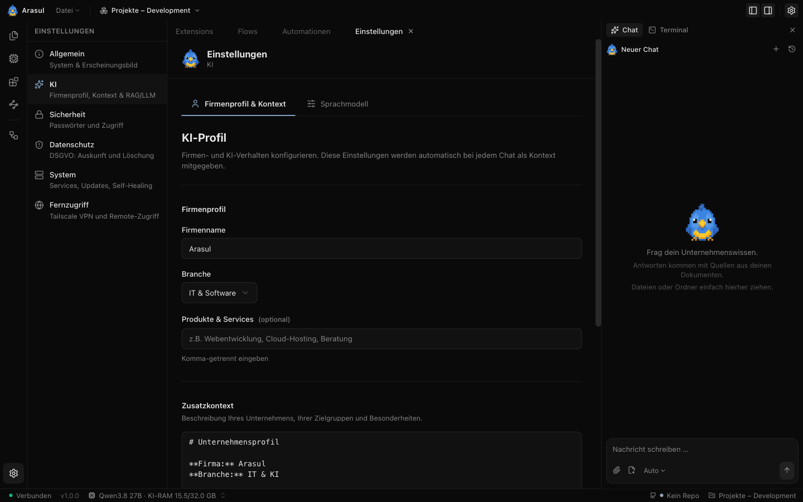
Zwei Reiter: Firmenprofil samt Zusatzkontext, und Sprachmodell mit Kontextfenster und Basis-System-Prompt. Das Firmenprofil geht laut Beschreibung bei jedem Chat als Kontext mit — vermutlich die Ursache von F-31.
- F-20 mittelG3neu
Siezen und Duzen stehen nebeneinander, teils im selben Bereich - F-31 großG1neu
Die KI beantwortet eine Produktfrage mit erfundenen Firmenaussagen - F-41 kleinG2im Code belegt
„Ungespeicherte Änderungen“ wird nur von einem Bereich gemeldet
Komponenten dieses Bildschirms (2) — je ein eigenes Feld
B10 · Einstellungen, Sicherheit
Weg dorthin: Zahnrad, dann Sicherheit
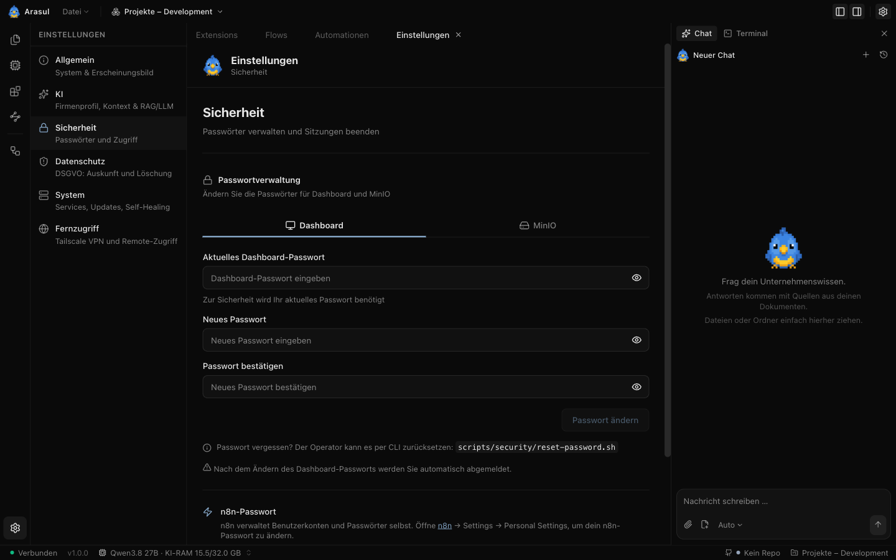
Passwort für Dashboard und MinIO, dazu Abmelden und von allen Geräten abmelden. Mehr nicht. Das ist der Bildschirm, auf dem ein Partner nach der Nutzerverwaltung suchen würde.
- F-20 mittelG3neu
Siezen und Duzen stehen nebeneinander, teils im selben Bereich - F-21 großG4neu
Es gibt keine Benutzerverwaltung, die Website verspricht sie - F-22 kleinG3neu
Die Oberfläche verweist den Kunden auf einen Repo-Pfad, den er nicht hat - F-41 kleinG2im Code belegt
„Ungespeicherte Änderungen“ wird nur von einem Bereich gemeldet
Komponenten dieses Bildschirms (2) — je ein eigenes Feld
B11 · Einstellungen, Datenschutz
Weg dorthin: Zahnrad, dann Datenschutz
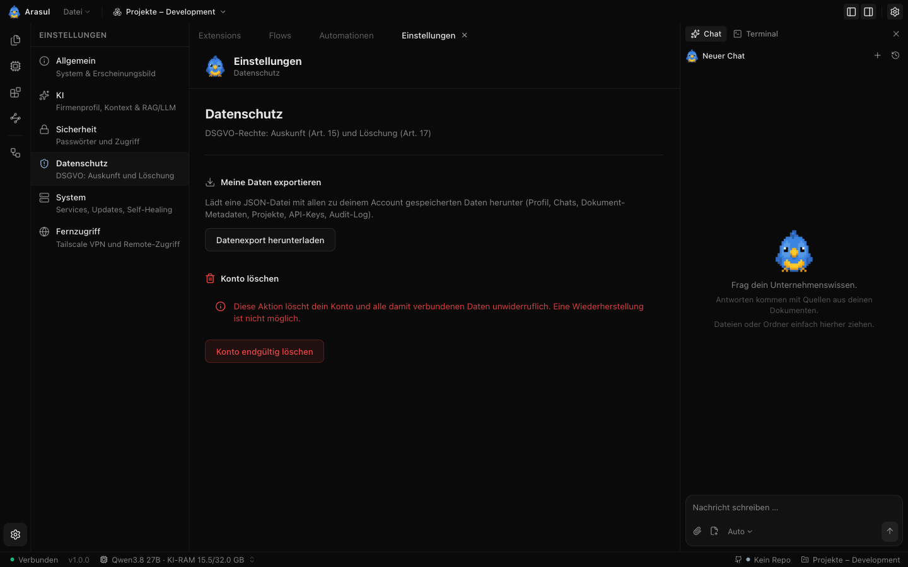
Zwei Karten: Datenexport nach Art. 15 und Kontolöschung nach Art. 17. Kurz und klar. Ungeprüft ist, ob das Backend das Löschen des letzten Administrators verhindert.
- F-27 mittelG1im Code belegt
„Konto endgültig löschen“ ohne erkennbaren Schutz des letzten Zugangs
Komponenten dieses Bildschirms (1) — je ein eigenes Feld
B12 · Einstellungen, System
Weg dorthin: Zahnrad, dann System
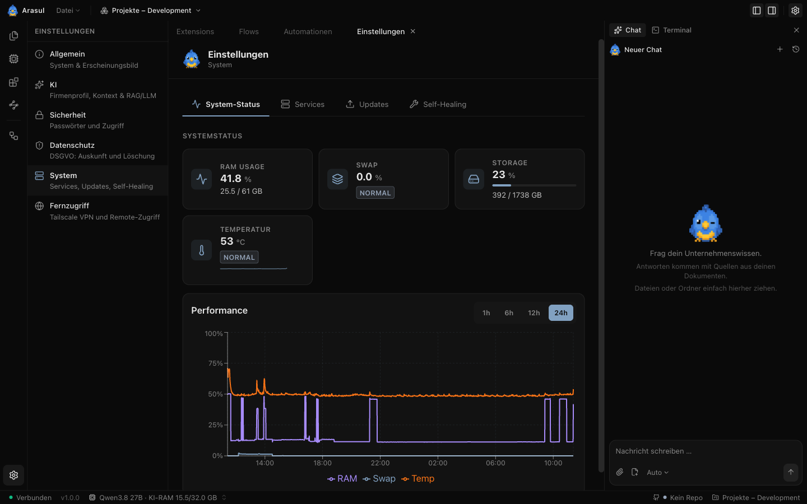
Vier Unterreiter: System-Status, Services, Updates, Self-Healing. Der Verlaufsgraph über 24 Stunden ist der beste Beleg für Dauerbetrieb, den das Produkt hat, und zahlt direkt auf Gate G7 ein.
- F-23 mittelG3neu
Englische Beschriftungen im deutschen Systembereich - F-24 mittelG2neu
Zwei verschiedene RAM-Gesamtwerte auf zwei Bildschirmen
Komponenten dieses Bildschirms (5) — je ein eigenes Feld
B13 · Einstellungen, Fernzugriff
Weg dorthin: Zahnrad, dann Fernzugriff
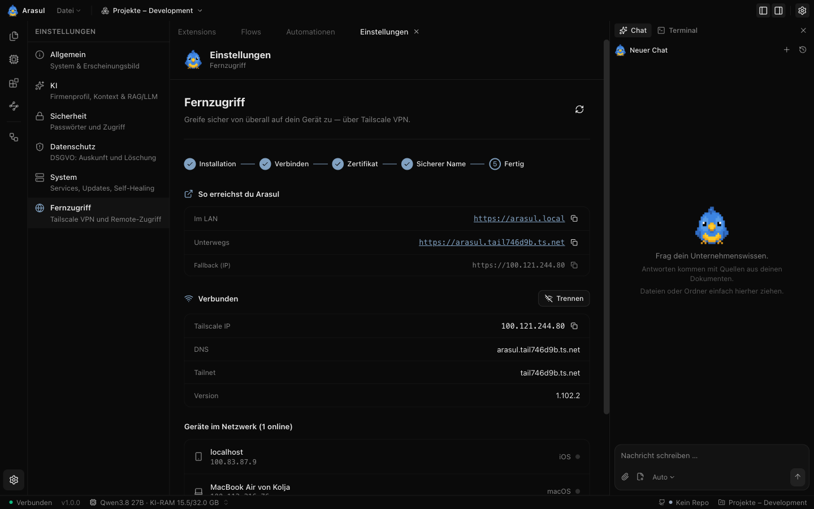
Der fünfstufige Assistent aus PR #370, live im Zustand „verbunden“. Drei Adressen mit Kopierknopf, Tailscale-Daten, Geräteliste. Der technische Blocker vor Meilenstein M5 ist hier sichtbar gelöst.
- F-26 kleinG2neu
Der Fernzugriff-Assistent zeigt Schritt 5 als offen, obwohl alles verbunden ist - F-37 mittelG2im Code belegt
Zwei zerstörende Aktionen ohne Rückfrage
Komponenten dieses Bildschirms (2) — je ein eigenes Feld
B14 · Chat, allgemeine Frage
Weg dorthin: rechtes Panel, Reiter Chat
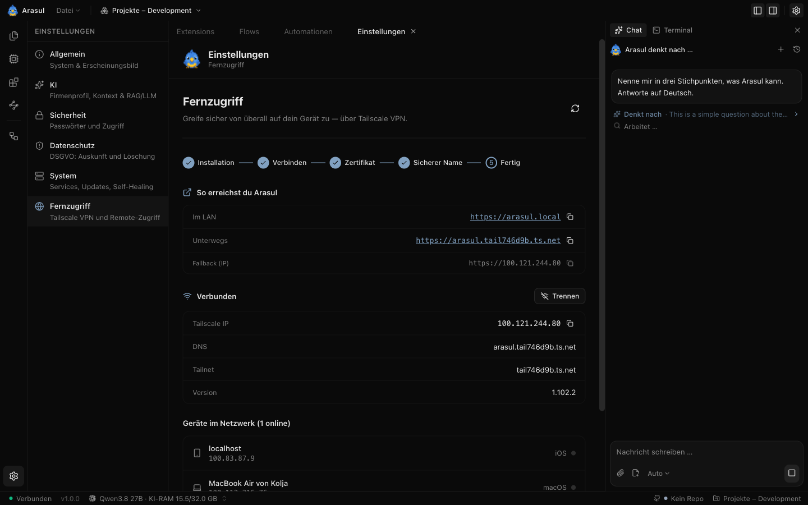
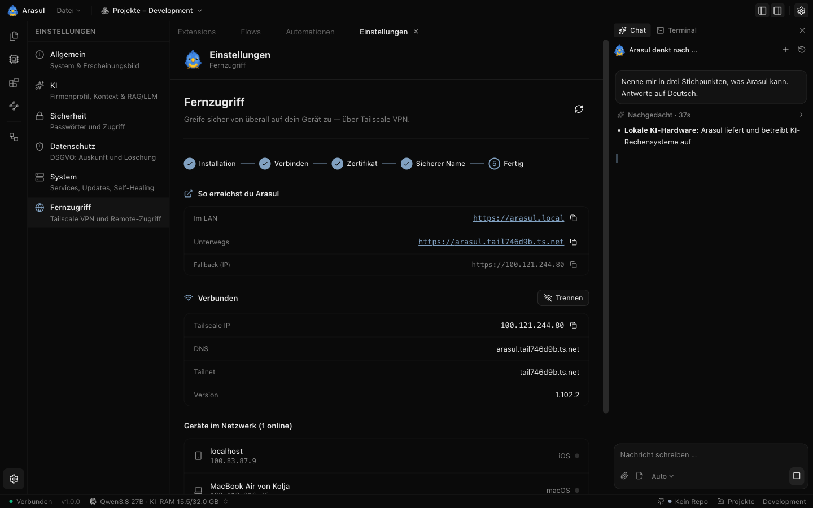
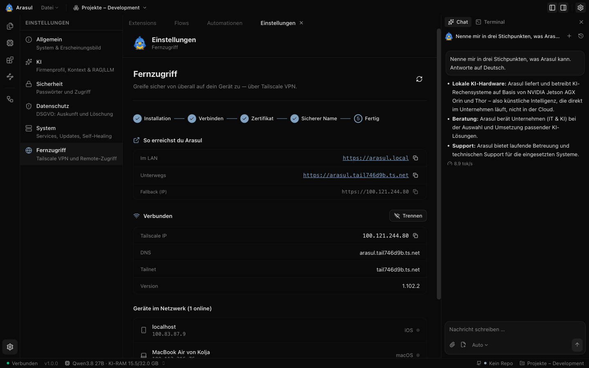
Frage: „Nenne mir in drei Stichpunkten, was Arasul kann. Antworte auf Deutsch.“ 37 Sekunden Denken, dann drei Stichpunkte mit 8,9 Token pro Sekunde. Zwei der drei Aussagen sind erfunden. Das ist der Bildschirm, an dem ein Partnergespräch kippt.
- F-28 gutG2eingelöst
37 Sekunden Denkzeit vor dem ersten Wort der Chat-Antwort - F-29 großG1neu
8,9 Token pro Sekunde statt 28,5 - F-30 mittelG3neu
Der Denkprozess wird auf Englisch angezeigt - F-31 großG1neu
Die KI beantwortet eine Produktfrage mit erfundenen Firmenaussagen - F-33 kleinG2neu
Der Chat-Titel bleibt während der Antwort auf „Arasul denkt nach …“
Komponenten dieses Bildschirms (4) — je ein eigenes Feld
B15 · Terminal
Weg dorthin: rechtes Panel, Reiter Terminal
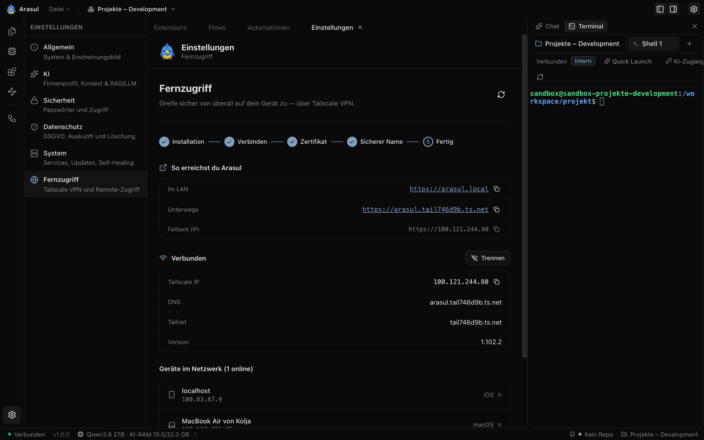
Sandbox-Container je Projekt, Netzmodus-Anzeige, Quick Launch, KI-Zugang. which claude codex node python3 liefert alle vier. Das Kernversprechen von Arasul Kit ist damit belegt.
- F-51 mittelG3neu
Das Terminal bricht im Standardlayout Pfade mitten im Wort um - F-54 gutG1eingelöst
Eingelöst und live bestätigt: Claude Code und Codex sind im Terminal installiert
Komponenten dieses Bildschirms (3) — je ein eigenes Feld
B16 · Dokument hochladen und indexieren
Weg dorthin: Dateibaum, Knopf Dateien hochladen
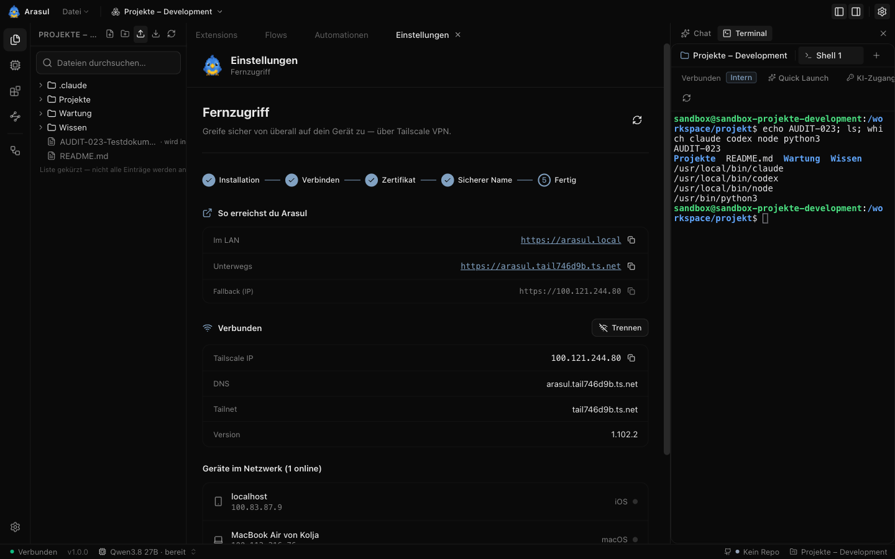
Der Baum zeigt den Zwischenstand „· wird indexiert“ direkt am Eintrag. Gute Rückmeldung. Gemessen: 1 Minute 53 Sekunden bis „indexiert“, für eine Datei von 739 Byte.
- F-49 mittelG1neu
Indexierung: 1 Minute 53 Sekunden für eine 739-Byte-Datei - F-50 mittelG1neu
Vektorsuche ist aus, RAG läuft auf der Textebene
Komponenten dieses Bildschirms (2) — je ein eigenes Feld
B17 · Chat mit Quellenangabe
Weg dorthin: rechtes Panel, Chat, nach dem Upload
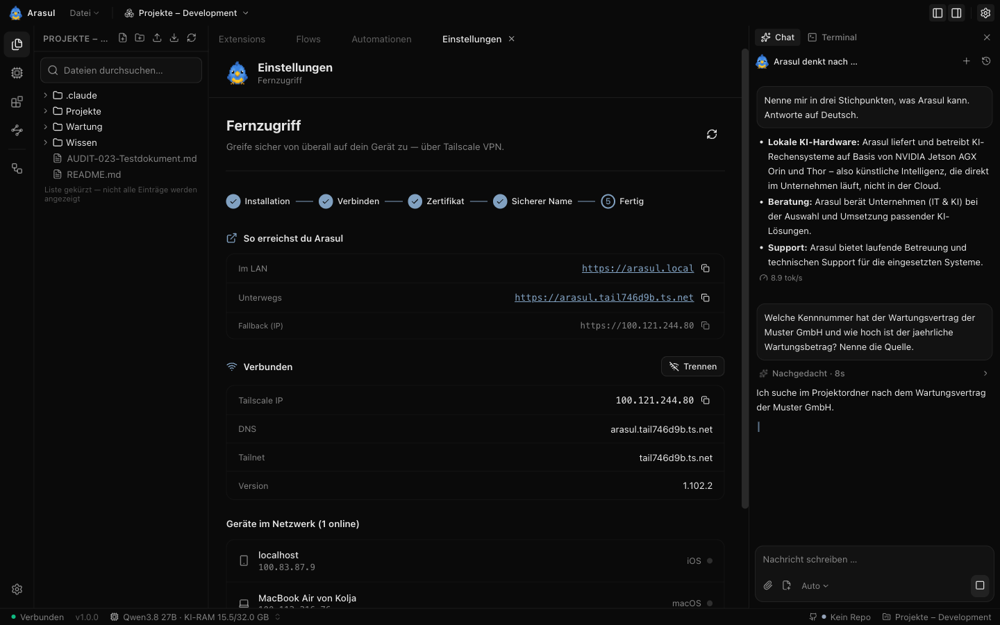
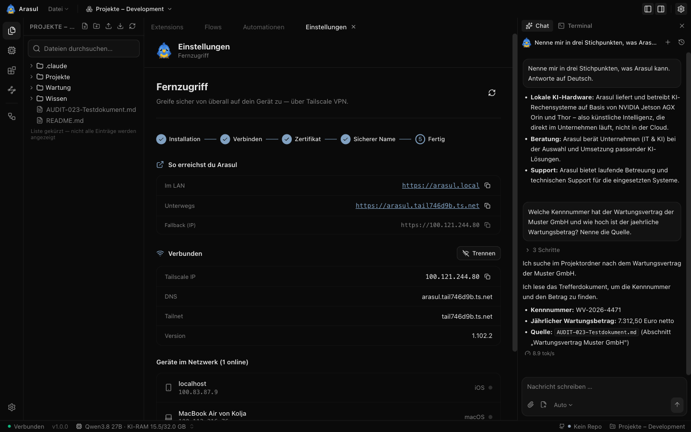
Frage nach einer Kennnummer, die in keinem Modell vorkommen kann. Der Agent sagt an, was er tut („Ich suche im Projektordner …“, „Ich lese das Trefferdokument …“), und liefert Kennnummer, Betrag und Quelle mit Abschnitt. Alles korrekt. Antwortzeit rund 70 Sekunden.
- F-53 gutG1eingelöst
Eingelöst und live bestätigt: RAG mit Quellenangabe - F-29 großG1neu
8,9 Token pro Sekunde statt 28,5
Komponenten dieses Bildschirms (2) — je ein eigenes Feld
B18 · Legacy-Shell
Weg dorthin: /settings, /store, /terminal von Hand eingetippt
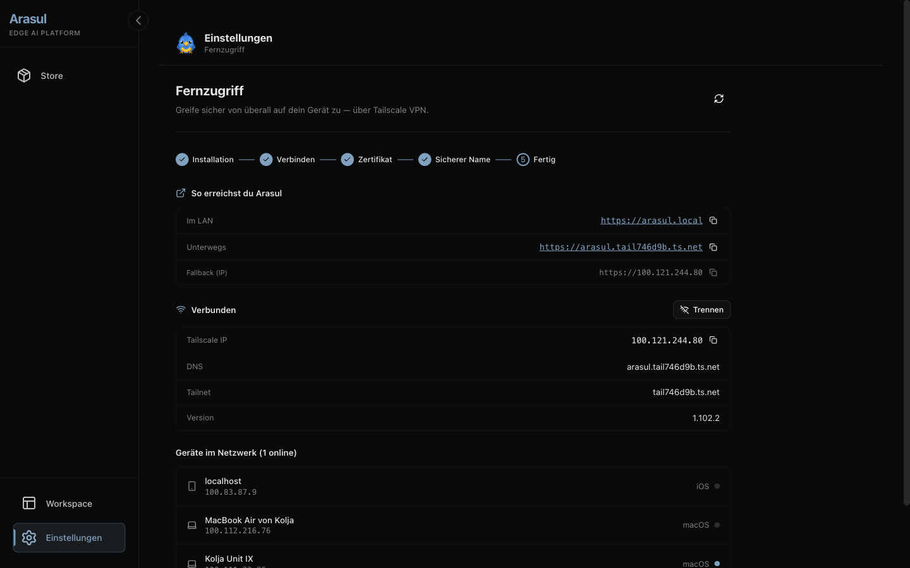
Dieselbe Einstellungsseite in einer völlig anderen Hülle, mit einem einzigen Menüeintrag und ohne Weg zu fünf der sechs Bereiche. Der Deep-Link auf einen Bereich funktioniert jetzt, die Navigation fehlt weiter.
- F-38 mittelG3seit 18.08. offen
Eine zweite, ungepflegte Oberfläche für dieselben Inhalte - F-52 gutG1eingelöst
Behoben und live bestätigt:/dashboardund Deep-Links in die Einstellungen
Komponenten dieses Bildschirms (2) — je ein eigenes Feld
B19 · 404
Weg dorthin: unbekannte URL
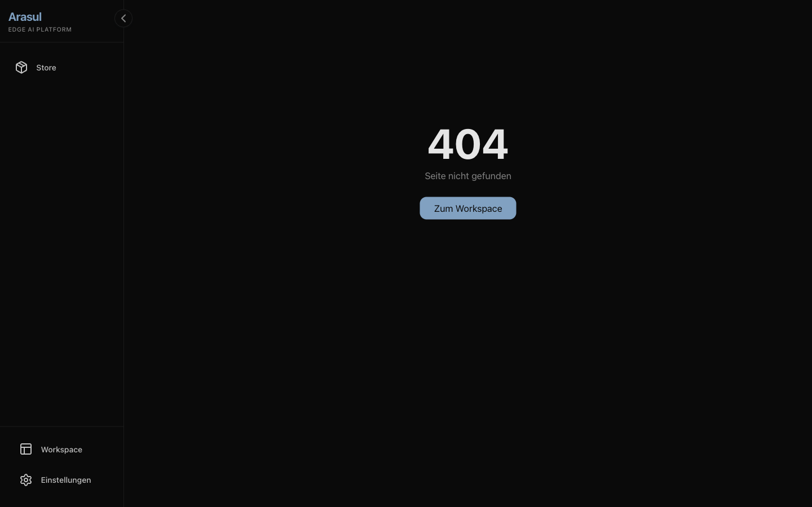
Gestaltet, deutsch, mit Weg zurück. Rendert allerdings in der Legacy-Shell, ein Tippfehler wirft den Nutzer also in die abgehängte zweite Oberfläche.
- F-38 mittelG3seit 18.08. offen
Eine zweite, ungepflegte Oberfläche für dieselben Inhalte
Komponenten dieses Bildschirms (1) — je ein eigenes Feld
O04 · Löschdialog für eine Datei
Weg dorthin: Rechtsklick im Dateibaum, Löschen

Kurz, klar, mit Dateinamen in Anführungszeichen. Genau so soll eine Rückfrage aussehen. Als Maßstab für die zwei zerstörenden Aktionen, die keine haben.
- F-37 mittelG2im Code belegt
Zwei zerstörende Aktionen ohne Rückfrage
Komponenten dieses Bildschirms (1) — je ein eigenes Feld
Was dieser Rundgang nicht gesehen hat
Ehrlichkeitshalber. Diese Bildschirme existieren, waren aber ohne weitere Vorbedingungen nicht erreichbar. Wenn dir einer davon wichtig ist, sag es — dann ist er im nächsten Lauf dabei.
setupComplete false ist. Auf diesem Gerät abgeschlossenKunden/ mit Unterordnern, sonst erscheint nicht einmal der KnopfSechs Entscheidungen, die anstehen
Diese kann ich nicht für dich treffen. Antworte hier oder im Chat.
E1 · Nutzerverwaltung: bauen oder Website und AVV ändern
Es gibt keinen dritten Weg. Die Website verspricht „legst Nutzer an“, „KI-Chat für dein Team“ und „3 bis 10 gleichzeitig aktive Nutzer“, die AVV-Vorlage sagt „Multi-User-Isolation, RBAC“ nach Art. 28 DSGVO zu, und das Gerät hat einen einzigen Zugang ohne Rollen. Deine Ansage war, Rollen hinten anzustellen. Das geht — aber dann müssen Website und AVV vorher geändert werden, sonst verkaufst du eine Zusage, die du nicht halten kannst.
E2 · Vorführtempo: welches Modell steht im Auto-Modus vorne
Der Wechsel auf Qwen3.8 27B hat die Vorführung von 2 Sekunden auf 37 Sekunden bis zum ersten Wort gebracht und den Durchsatz gedrittelt. Für ein Partnergespräch ist das der teuerste einzelne Befund. Entweder fällt das Reasoning-Modell aus dem Auto-Modus, oder der Denkschritt wird begrenzt.
E3 · Die sechs fremden Container
jarvis-*, litellm und avatar-ffmpeg hängen im Produktnetz, seit dem 07.07.2026 als P3-1 offen. litellm hält Cloud-Schlüssel. Solange die auf dem Vorführgerät laufen, ist ein Blick ins Terminal ein Argument gegen dich.
E4 · Was mit den Plänen 020 und 021 passiert
021 ist zu 81 Prozent umgesetzt (6 von 8 Schritten, PRs #346 bis #364), 020 zu rund 30 Prozent (1 von 7). Die Roadmap führt beide als planned ohne PR. Vorschlag: 021 auf done mit dokumentierter Abweichung, 020 als teilgeliefert schließen, und der hardwaregebundene Rest (020 S5, S6, S7 plus 021 S7) wird ein eigenes Thema.
E5 · Gate G4 neu fassen
G4 heißt heute „Mandanten-Isolation bewiesen“. Bei ein bis drei Nutzern je Gerät ist das die falsche Frage. Vorschlag aus dem Vorgespräch: G4 wird „Daten eines Geräts verlassen das Gerät nicht, und ein Gerät sieht kein anderes“. Achtung, das entbindet nicht von E1 — die Zusagen in Website und AVV bleiben davon unberührt.
E6 · Was der Auslieferungszustand enthalten darf
Heute stehen darin: drei Erweiterungen namens „Beispiel-…“, ein Flow namens „/qa-zusammenfassung — QA-Test“, zwei fremde n8n-Workflows aus dem Juli. Braucht eine Entscheidung, was ab Werk drin ist und was ein Werksreset entfernt — den es noch nicht gibt.
Alles Übrige
Was hier nicht vorkommt, aber gesagt werden muss.